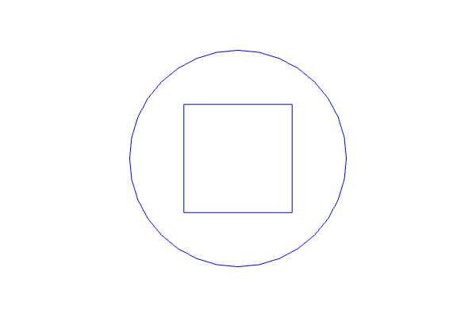
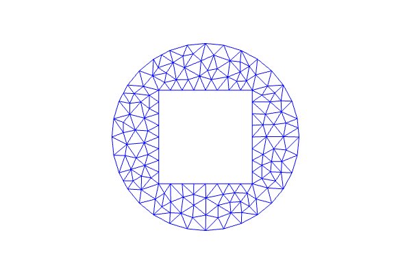

6. Create CSG 2D-geometry¶
This demo is implemented in a single Python file,
demo_csg_2D.py, and demonstrates use of 2D geometries in
DOLFIN.
This demo illustrates how to:
- Define CSG geometries
- Generate meshes from geometries
The domain looks as follows:
{kind=link}
and the mesh:
{kind=link}
6.1. Problem definition¶
We do not have any equation in this demo. The demo focuses purely on the geometry and how to generate a mesh from it.
6.2. Implementation¶
This description goes through the implementation in
demo_csg_2D.py that shows how to make geometries and
meshes in DOLFIN.
First, the dolfin module is imported:
from dolfin import *
Then we check if CGAL is installed, as it is needed to run this demo:
if not has_cgal():
print "DOLFIN must be compiled with CGAL to run this demo."
exit(0)
Now, we define 2D geometries. We create a Rectangle defined by two opposite corners:
r = Rectangle(0.5, 0.5, 1.5, 1.5)
where the first two arguments represent the first corner, and the last two arguments represent the opposite corner.
A Circle may be defined by:
c = Circle (1, 1, 1)
where the center of the circle is given by the first two arguments, and the third argument gives the radius. We may use these geometries to define a new geometry by subtracting one from the other:
g2d = c - r
To get information about our new geometry we use the function
info. This function takes a
string or a DOLFIN object as argument, and optionally we can give a
second argument to indicate whether verbose object data should be
printed. If the second argument is False (which is default), a
one-line summary is printed. If True, verbose and sometimes very
exhaustive object data are printed.
# Test printing
info("\nCompact output of 2D geometry:")
info(g2d)
info("")
info("\nVerbose output of 2D geometry:")
info(g2d, True)
To visualize our geometry we plot it:
# Plot geometry
plot(g2d, "2D Geometry (boundary)")
The second argument is optional, it specifies the title of the plot.
Finally, we generate a mesh using Mesh and plot it.
# Generate and plot mesh
mesh2d = Mesh(g2d, 10)
plot(mesh2d, title="2D mesh")
Note that when we create a mesh from a CSG geometry, the resolution must be specified. It is given by an integer as a second argument in Mesh.
6.3. Complete code¶
from dolfin import *
if not has_cgal():
print "DOLFIN must be compiled with CGAL to run this demo."
exit(0)
# Define 2D geometry
domain = Rectangle(0., 0., 5., 5.) - Rectangle(2., 1.25, 3., 1.75) - Circle(1, 4, .25) - Circle(4, 4, .25)
domain.set_subdomain(1, Rectangle(1., 1., 4., 3.))
domain.set_subdomain(2, Rectangle(2., 2., 3., 4.))
# Test printing
info("\nCompact output of 2D geometry:")
info(domain)
info("")
info("\nVerbose output of 2D geometry:")
info(domain, True)
# Plot geometry
plot(domain, "2D Geometry (boundary)")
# Generate and plot mesh
mesh2d = Mesh(domain, 45)
plot(mesh2d, "2D mesh")
# Convert subdomains to mesh function for plotting
mf = MeshFunction("size_t", mesh2d, 2, mesh2d.domains())
plot(mf, "Subdomains")
interactive()